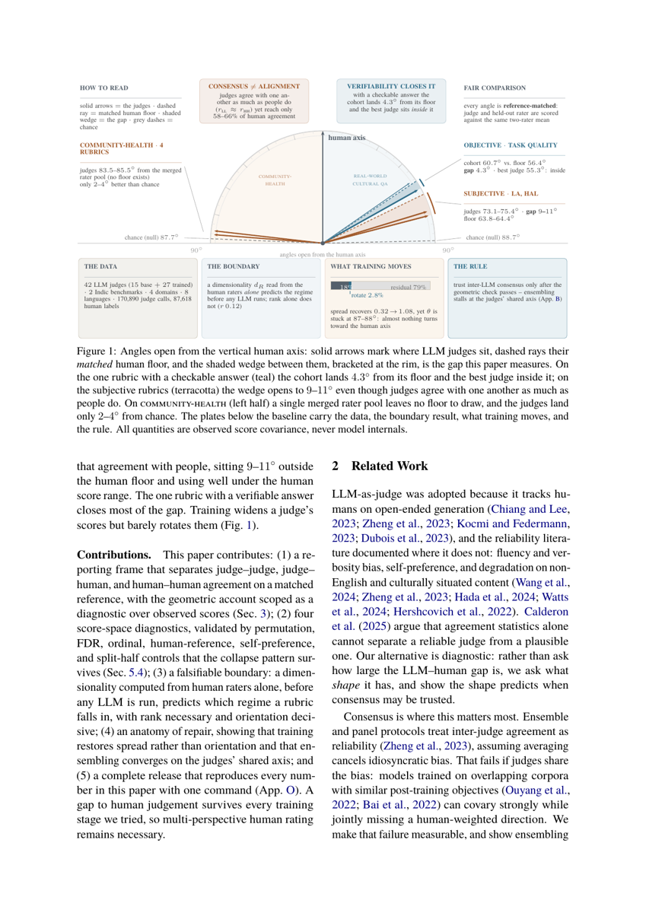
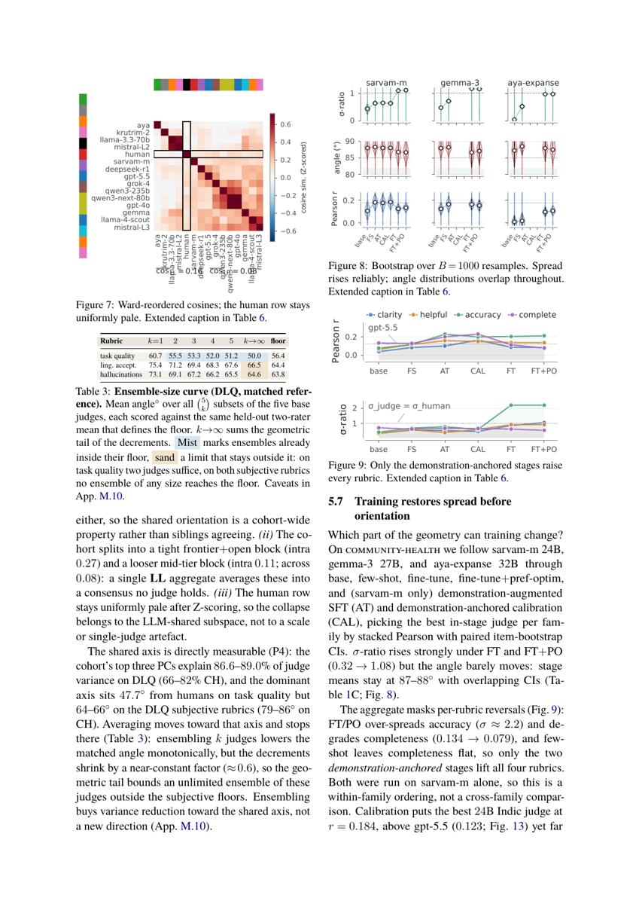
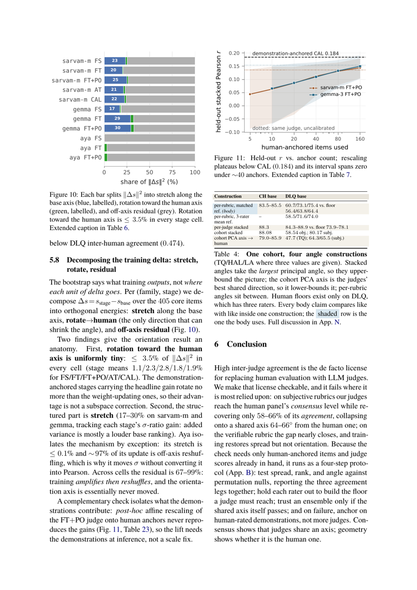

⚠️ Source = PDF, pas LaTeX. L'archive e-print ne contenait pas de source. Travail fait sur
pdftotext -layout+ lecture visuelle des pages 5 et 8 pour vérifier Tab. 1 et Tab. 3. Conséquence : les figures ne sont pas extractibles individuellement (rendu page entière), et un chiffre enfoui dans une annexe mal mise en page peut avoir été manqué. Tous les chiffres cités ci-dessous ont été relus dans le texte extrait ; Tab. 1 et Tab. 3 ont en plus été vérifiés visuellement.
TL;DR — l'accord entre juges LLM et l'alignement aux humains sont deux quantités orthogonales : sur rubriques subjectives les juges atteignent le niveau de consensus du panel humain (rll 0.356 vs rhh 0.357) tout en ne récupérant que 58–66 % de l'accord humain, parce qu'ils se concentrent sur un axe partagé situé à 64–66° de l'axe humain ; ensembler converge vers cet axe et s'y arrête.
Claim principal, formulé précisément — sur les deux rubriques subjectives de real-world cultural QA
(DLQ), avec 5 juges base, référence reference-matched (un rater tenu hors, moyenne des deux autres
comme cible unique pour le rater et pour chaque juge) : rlh = 0.207 / 0.239 contre rhh = 0.357 / 0.364,
soit 58 % / 66 %, et θ = 75.4° / 73.1° contre un plancher humain de 64.4° / 63.8° (écart 11.0° / 9.3°)
[Tab. 1A, §5.1–5.2]. Sur la seule rubrique vérifiable (task quality) l'écart tombe à 4.3° (60.7° vs 56.4°)
et le meilleur juge (55.3°) passe sous le plancher [§5.2]. L'ensembling de k juges réduit l'angle
monotoniquement mais la limite extrapolée reste hors du plancher subjectif [Tab. 3].
L'entraînement de juge fait passer σJ/σH de 0.319 à 1.078 sans bouger θ (87.7° → 87.1°) [Tab. 1C].
Ce que le papier n'est pas. Ce n'est ni un environnement RL, ni un algorithme de post-training. C'est un instrument de mesure sur des scores de juges, plus un protocole en 4 étapes [App. B].
community-health (CH, Samiksha, Hamna et al. 2026 / Bhat et al. 2025) : benchmark médico-conseil
en hindi, kannada, malayalam. 810 questions (270/langue), 3 générateurs de réponses
(llama-3.1-405b, qwen3, sarvam-m) → 2 430 paires QA [Tab. 8, 9].real-world cultural QA (DLQ, Pariksha, Watts et al. 2024) : daily-life QA, 3 domaines
(health & wellness 284, finance 323, everyday life 575 items), 27 générateurs de réponses,
8 langues indo-aryennes et dravidiennes [Tab. 8].Pas d'environnement RL. Le « harness » est un protocole de scoring et un protocole de mesure.
Observation du juge : single-turn, pas d'outils, pas de navigation. Deux prompts verbatim [App. I].
Prompt standalone multi-rubriques (recopié, App. I) :
Task. Evaluate the answer to the question on four rubrics.
Audience. Internal evaluator. Do not browse. Use only general knowledge and the given text.
Language. The (question, answer) pair may be in Hindi, Kannada, Malayalam, Bengali, Tamil,
Telugu, Marathi, or Odia. Judge within the answer's language. Write the explanation in
concise English.
Rubrics (one rating per rubric: Yes / Somewhat / No):
i. Clarity & fluency: is the language clear, grammatically correct, easy to understand?
ii. Helpfulness & relevance: does the answer directly address the question and provide
useful information?
iii. Accuracy (general perception): based on general knowledge, does the information seem
trustworthy and factually correct?
iv. Completeness & conciseness: does the answer provide sufficient detail without being
verbose or repetitive?
Scoring. Yes=2, Somewhat=1, No=0. Overall = sum of the four.
Output schema (strict, single minified JSON, no prose, no code fences):
{
"clarity": {"rating":"Yes|Somewhat|No","explanation":"..."},
"helpfulness": {...}, "accuracy": {...}, "completeness": {...},
"scores": {"clarity":int,"helpfulness":int,"accuracy":int,"completeness":int,"overall":int}
}
Question: {{question}}
Answer: {{answer}}
Return the JSON now.
Sur DLQ, le même template substitue 3 rubriques : task quality ({0,1,2}), linguistic acceptability ({0,1,2}), hallucinations ({0,1}) [App. I].
Prompt comparative (pairwise) (recopié, App. I) :
Task. Compare two answers to the same question and pick the better one overall.
Audience. Internal evaluator. Use only the question, the two answers, and general world
knowledge; no external browsing.
Languages. The (question, A, B) triple may be in Hindi, Kannada, or Malayalam. Judge within
the answers' language; write the explanation in concise English (<= 40 words).
Holistic criteria. Clarity & fluency, helpfulness & relevance, factual accuracy / plausibility,
completeness (no critical omissions), and safety. Prefer the answer that better serves the
user overall; do not reward hallucinated or unsafe content.
Decision rule. Choose A or B if one answer is even slightly better overall. Choose Not sure
only if both are essentially equal or both are unintelligible/empty.
Output (strict, single JSON, exact keys):
{ "winner": "A" | "B" | "Not sure", "explanation": "<concise justification <=40 words>" }
Question: {{question}}
Answer A: {{answer_a}}
Answer B: {{answer_b}}
Return only the JSON now.
Rubriques et échelles [Tab. 12] :
| Dataset | Rubrique | Échelle | Définition |
|---|---|---|---|
| CH | clarity & fluency | {0,1,2} | langage clair, grammatical, compréhensible |
| CH | helpfulness & relevance | {0,1,2} | répond directement avec de l'info utile |
| CH | accuracy | {0,1,2} | fiable au regard des connaissances médicales générales |
| CH | completeness & concis. | {0,1,2} | détail suffisant sans verbosité |
| DLQ | task quality (obj.) | {0,1,2} | satisfait les contraintes de tâche ; vérité terrain vérifiable |
| DLQ | linguistic acceptability | {0,1,2} | grammaticalité / naturel natif |
| DLQ | hallucinations | {0,1} | présence binaire de contenu non étayé |
Exécution : décodage local greedy (temperature 0.0, top-p 1.0), max 512 tokens de sortie (1024–2048 sur passes de parse-retry), vLLM 0.18.0 en bf16 sur 8×B200 [App. J, Tab. 24]. Juges API : versions et dates d'appel épinglées [Tab. 24] — gpt-5.5_2026-04-24 appelé 2026-05-23, DeepSeek-R1_1, grok-4_1, Mistral-Large-3_1, Llama-3.3-70B-Instruct_5 idem ; gpt-4o (CH) et gpt-4 (DLQ) hérités des benchmarks sources. « All local decoding is greedy (temperature 0.0), so local-judge scores are deterministic up to serving nondeterminism » [App. O]. ⚠️ Les juges closed-API peuvent changer silencieusement : les auteurs le disent et précisent que la reproduction exacte de leurs scores API n'est pas garantie [Limitations].
Gestion des erreurs / sorties mal formées : mécanisme de parse-retry avec budget de tokens relevé (1024–2048) [App. J]. Pas d'autre détail : taux de parse-failure non précisé. ⚠️ C'est une omission gênante — un taux d'échec de parsing corrélé à la famille de modèle contaminerait les comparaisons inter-juges.
Exemple de trajectoire : le papier ne donne pas de trace complète juge. Il donne 8 items qualitatifs [Tab. 26–27, App. P] montrant ce sur quoi juge et humain divergent — voir §5 ci-dessous.
Le protocole de mesure (c'est le vrai « harness » du papier) — 4 diagnostics [§3] : 1. Spread ratio σJ/σH : SD du juge sur SD de la référence humaine, par rubrique. 2. Effective rank r95 = min{k : Σi≤kλi / Σiλi ≥ 0.95}. 3. Angle principal θ(SJ, SH), toujours lu contre (a) un plancher inter-humain reference-matched et (b) un null de permutation. 4. Le triple d'accord (rll, rlh, rhh), rapporté ensemble, jamais agrégé.
Identité centrale [Eq. 2, App. D] : pour une direction unique, cos θ = |r|, donc 1 − cos²θ(s,h) = 1 − r² est exactement la fraction de variance de score humain que cette direction laisse inexpliquée. Ce n'est pas une analogie, c'est une réécriture de Pearson en géométrie.
Les 4 constructions d'angle [Tab. 4] — clé pour ne pas se faire piéger :
| Construction | CH base | DLQ base (TQ / HAL / LA) |
|---|---|---|
| per-rubric, référence matchée (celle du corps) | 83.5–85.5° | 60.7 / 73.1 / 75.4 vs plancher 56.4 / 63.8 / 64.4 |
| per-rubric, référence = moyenne 3 raters | – | 58.5 / 71.6 / 74.0 |
| per-judge stacked (plus grand angle principal) | 88.3° | 84.3–88.9° vs plancher 73.9–78.1° |
| cohort stacked | 88.08° | 58.54 obj. ; 80.17 subj. |
| axe PCA du cohorte → humain | 79.0–85.9° | 47.7 (TQ) ; 64.3 / 65.5 (subj.) |
Le stacked borne par le haut (plus grand angle principal = la pire paire de directions), l'axe PCA borne par le bas (meilleure direction partagée), le per-rubric est entre les deux [App. N].
C'est le cœur du papier : il mesure la fiabilité du vérifieur, il n'en construit pas un.
| Rubrique | rlh | rll | rhh | θ° matché | plancher θhh° | % du niveau humain |
|---|---|---|---|---|---|---|
| CH subj. (moy. 4 rubriques, 14 juges) | 0.093 | 0.180 | – | 84.4 | – (pas de plancher) | – (41–64 % de l'inter-LLM) |
| DLQ ling. accept. (subj.) | 0.207 | 0.356 | 0.357 | 75.4 | 64.4 | 58 % |
| DLQ hallucinations (subj.) | 0.239 | 0.349 | 0.364 | 73.1 | 63.8 | 66 % |
| DLQ task quality (obj.) | 0.418 | 0.530 | 0.474 | 60.7 | 56.4 | 88 % |
[Tab. 1A, vérifié visuellement p.5] - Version ordinale (QWK) reproduit le motif [Tab. 20] : QWKLH/QWKHH = 0.339/0.464 (TQ), 0.185/0.355 (LA), 0.197/0.350 (HAL) ; CH 0.030–0.071 sans référence. - En espace de préférence sur CH comparative : κLL = 0.445 vs κLH = 0.128, écart 3.5× (juges base, 2 430 paires, κ 3 classes) [§5.1]. - Variance humaine irrécupérable — ridge CV 5-fold (α=1, entrées standardisées), reconstruction du score humain moyen depuis tout le cohorte : CV R² = 0.446 sur task quality (55.4 % irrécupérable), 0.203 / 0.210 sur LA/HAL (79.7 % / 79.0 %), ≤ 0 sur les 4 rubriques CH (≈ 100 % irrécupérable) [App. M.6]. ⚠️ C'est le chiffre le plus brutal du papier et il est sous-vendu dans l'abstract. - Planchers inter-humains par langue [Tab. 21] — mesurables dans les 8 : TQ rhh 0.20 (odia) à 0.61 (marathi) ; LA 0.19 (kannada) à 0.50 (hindi) ; HAL 0.20 (tamil) à 0.53 (malayalam). ⚠️ Le plancher humain lui-même est bas et très variable. - Le choix de mesure qui porte tout — reference matching : sur DLQ, un rater est tenu hors, la moyenne des deux autres est la référence unique contre laquelle sont scorés et le rater tenu hors et chaque juge, moyenné sur les 3 folds [App. L]. Sans ce matching, sur task quality rlh passe de 0.418 à 0.519 et les juges franchissent le plancher humain [§5.1] — une conclusion inversée. Stabilité de la référence [Tab. 18] : sur 7 constructions, l'angle objectif reste ≤ 66.5° et le subjectif ≥ 72.8° — l'ordre objectif-sous-subjectif ne bascule jamais. - Robustesse / contrôles [Tab. 2, App. L–M] :
| Contrôle | Résultat |
|---|---|
| Null de permutation | nulls DLQ per-rubric 88.6–88.7° ; les 15 angles juge×rubrique sous les 500 shuffles (p < 0.002 chacun), le plus faible survit Bonferroni sur 15 |
| CH judge-level + FDR | null stacked CH 88.8° ; à 20 000 shuffles, 11/40 juges sous le null à p < .05 (2 attendus par hasard), 6 survivent Benjamini–Hochberg à q < .05, 10 à q < .10 [Tab. 19] |
| Ordinal / échelle | Spearman ≈ Pearson à 0.02 près (écart max 0.017) ; remap monotone sur la marginale humaine déplace θ de ≤ 0.13° (DLQ) / ≤ 0.31° (CH) [Tab. 17] → la compression n'est pas un usage prudent de l'échelle |
| Self-preference | 2 des 3 générateurs CH sont aussi juges ; déviation standardisée intra-triple, moins celle de l'humain, moins celle du reste du cohorte : sarvam-m +0.028 SD (p=0.58), qwen3 −0.035 (p=0.71), llama −0.008 (p=0.95), null de permutation 20 000 tirages → aucun effet [App. M.8] |
| Split-half (200 tirages) | angles per-rubric DLQ concordent à |Δθ| moyen 2.3–2.5° ; ordre des juges préservé (r = 0.96/0.97/0.74) ; sur CH l'ordre des 40 juges ne réplique pas (r ≈ 0, κ = 0.02 entre moitiés) [App. M.9] |
| dR séparateur (P5) | dR calculé depuis les humains seuls sépare objectif (≈2.1) de subjectif (≈2.4) ; mais plat à l'intérieur de chaque groupe (ρ = −0.03 sur 6 cellules subjectives) [App. M.7] |
Aucun RL, aucun entraînement de policy générative. Le seul entraînement porte sur les juges, pour tester si une intervention peut corriger la géométrie [§5.7]. Détail utile car c'est le seul endroit où le papier touche à des recettes de post-training [Tab. 15, App. J] :
| Recette | Appliquée à | Hyperparamètres |
|---|---|---|
| few-shot (FS) | 3 familles | jusqu'à k=3 démos par (langue × rubrique), tirées du pool humain hold-out, shortest-first avec round-robin sur les classes de rating ; poids gelés ; auto-shrink 3→2→1 sous budget de tokens |
| fine-tune (FT) | 3 familles | LoRA SFT per-rubric sur le corpus de 5 683 labels ; rank 16–64 (α = 2r), cibles {q,k,v,o,gate,up,down}, AdamW, schedule cosine, bf16, 2–6 epochs, best-checkpoint sur eval loss (ex. sarvam-m v2 : r=64, α=128, meilleur checkpoint ≈1.9 epoch) |
| pref-optim (PO) | 3 familles | DPO depuis le modèle base sur 2 935 triples de préférence stricte ; v1 : r=16/α=32, β=0.1, LR 8×10⁻⁶, 1 epoch ; v2 : r=32/α=64, β=0.05, LR 5×10⁻⁷, 2 epochs |
| FT + PO | 3 familles | stage-wise : checkpoint FT mergé → DPO |
| demo-SFT (AT) | sarvam-m seul | SFT augmenté de démonstrations : K démos notées par des humains insérées dans chaque prompt d'entraînement (self-demo exclu) ; AT-v1 (K=1), AT-v2 (K=3), AT-v1-inf3 (entraîné à 1 démo, scoré avec prompts 3-démos) |
| calibrated (CAL) | sarvam-m seul | calibration ancrée sur démonstrations : meilleur checkpoint DPO gelé, scoré avec K démos humaines en contexte à l'inférence (CAL-v2 K=2, CAL-v3 K=3) ; aucune mise à jour de poids, aucun rescaling de couche de sortie |
| Stage | n | σJ/σH | θ° stacked | r | Δ vs BASE |
|---|---|---|---|---|---|
| BASE | 3 | 0.319 | 87.7 | 0.081 | 0.000 |
| FS | 3 | 0.624 | 88.3 | 0.122 | +0.041 |
| FT | 3 | 1.074 | 87.1 | 0.129 | +0.048 |
| FT+PO | 3 | 1.078 | 87.1 | 0.132 | +0.051 |
| AT (sarvam-m) | 1 | 0.649 | 88.0 | 0.177 | +0.096 |
| CAL (sarvam-m) | 1 | 0.633 | 88.1 | 0.184 | +0.103 |
→ le spread triple, l'angle bouge de 0.6° avec des CI bootstrap qui se recouvrent partout [Fig. 8].
Le papier ne parle pas de reward hacking (aucun optimiseur n'attaque le juge). Il documente en revanche cinq modes d'échec du vérifieur, tous mesurés :
Perspective collapse (le mode central). Comportement : les juges atteignent le niveau de consensus du panel humain sans atteindre son niveau d'accord — ils s'accordent sur un autre axe. Détection : le triple (rll, rlh, rhh) rapporté séparément sur une construction unique, + PCA du cohorte : les 3 premières PC expliquent 86.6–89.0 % de la variance juge sur DLQ (66–82 % CH) et l'axe dominant est à 47.7° des humains sur task quality mais 64–66° sur les subjectives (79–86° sur CH) [§5.6]. Correction : aucune trouvée. Toutes les interventions testées échouent à tourner l'axe (§4). Recommandation : garder du rating humain multi-perspective.
Score compression. Comportement : le juge médian base sur CH utilise moins de la moitié du spread humain (σ-ratio 0.454) ; universelle sur les 8 langues (0.43–0.76) et invariante par domaine (0.67–0.82) [§5.3, §5.5]. Détection : σJ/σH, et surtout le contrôle de remap monotone qui écarte l'explication « échelle prudente » (θ bouge de ≤ 0.13° / ≤ 0.31°) [Tab. 17]. Correction : FT/FT+PO restaurent le spread (0.32 → 1.08) — et c'est tout, l'angle ne bouge pas. Séparabilité alignement / calibration d'échelle explicitement établie [§5.3].
Rank deficiency. Comportement : les références humaines utilisent la base complète (r95 = 4 sur CH, 3 sur DLQ) ; 11 des 14 juges base CH sont à r95 ≤ 3 [§5.3]. Correction : n.a. — et surtout, le rang ne prédit pas l'alignement (r = 0.12 sur 40 juges CH, r95 de 1 à 4, angles 85.0–89.9°). C'est l'orientation qui compte [§5.4].
Over-spread / régression per-rubrique sous fine-tuning — le mode le plus directement pertinent pour du post-training. Comportement : FT/PO sur-étalent accuracy (σ ≈ 2.2, soit > 2× le range humain) et dégradent completeness (0.134 → 0.079) ; le few-shot laisse completeness plat [§5.7, Fig. 9]. Détection : l'agrégat stacked Pearson masque ces inversions — few-shot (0.1837) et CAL v3 (0.1845) sont indistinguables en agrégé, l'avantage des démonstrations n'est visible que per-rubrique [Tab. 11]. Correction : seules les deux étapes ancrées sur démonstrations (AT, CAL) relèvent les quatre rubriques avec le spread resté dans le range humain. ⚠️ Mais AT et CAL n'ont tourné que sur sarvam-m : les auteurs précisent que c'est un ordre intra-famille, pas une comparaison inter-familles.
Artefact d'orientation de label hérité. Comportement : sur le split comparatif DLQ, un juge (gpt-4 hérité de Pariksha) est anti-corrélé aux 3 humains (κ ≈ −0.19) alors qu'ils s'accordent entre eux (κ ≈ 0.53). Détection : comparaison des trois jambes. Correction : split exclu de l'analyse, compté seulement dans les totaux [App. M.12]. ⚠️ Bon réflexe, mais cela signifie que 21 610 des 170 890 appels annoncés ne servent qu'à gonfler le total affiché — voir 7.0.
Comportement émergent documenté qualitativement [Tab. 27, App. P] — la nature de l'axe manquant. Sur 4 items santé en kannada/malayalam/hindi, les juges LLM scorent sur la complétude médicale là où les humains pondèrent l'accessibilité pratique, la vulnérabilité institutionnelle, l'abordabilité et la réassurance : - Subj-1 (porter plainte contre un centre de santé qui demande de l'argent) : le LLM donne la procédure de plainte ; l'humain valorise la reconnaissance de la peur des représailles et de la dépendance au même centre. - Subj-4 (VBAC après césarienne) : le LLM met en avant rupture utérine et détresse fœtale ; l'humain valide d'abord le désir d'accouchement normal puis discute les risques proportionnellement. Les auteurs qualifient eux-mêmes ces 4 items de « grounding rather than evidence » — pas de codage per-axe systématique. ⚠️ Honnête, mais c'est la partie « pourquoi » du papier et elle reste anecdotique.
| Chiffre annoncé | Où il est annoncé | Source dans le papier | Verdict |
|---|---|---|---|
| 42 juges | abstract, §4, plate Fig. 1 | Tab. 9 (14 base CH + 5 base DLQ − 4 communs = 15 base) + Tab. 11 (27 variants) = 42 | confirmé — mais ⚠️ sur-généralisé comme socle du résultat phare : tous les angles reference-matched et tout le plancher humain reposent sur les 5 juges base DLQ ; les 40 juges CH n'ont aucun plancher et leur ordre par angle ne réplique pas [App. M.9] |
| « judges agree with one another as much as humans do » | abstract, Fig. 1, concl. | Tab. 1A : rll 0.356 vs rhh 0.357 (LA) ; 0.349 vs 0.364 (HAL) | confirmé sur ces 2 rubriques ; ⚠️ sur-généralisé hors DLQ — sur CH rll = 0.180 et aucun rhh n'existe pour comparer |
| 58–66 % de l'accord humain | abstract, intro, concl. | Tab. 1A : 0.207/0.357 = 58.0 % ; 0.239/0.364 = 65.7 % | confirmé |
| task quality à 88 % du niveau inter-humain | §5.2, Tab. 14 | Tab. 1A : 0.418/0.474 = 88.2 % | confirmé |
| gap 4.3° sur l'objectif, 9–11° sur le subjectif | abstract (implicite), Fig. 1, §5.2 | Tab. 1A : 60.7−56.4 = 4.3 ; 75.4−64.4 = 11.0 ; 73.1−63.8 = 9.3 | confirmé |
| meilleur juge 55.3°, « inside the floor » | Fig. 1, §5.2 | §5.2 corps seulement ; aucun tableau ne liste les angles per-judge DLQ | introuvable (dans un tableau) — cohérent avec Tab. 1A mais non vérifiable |
| « an averaged reference flatters judges by several degrees » | abstract | Tab. 4 : per-rubric 3-rater-mean 58.5/71.6/74.0 vs matché 60.7/73.1/75.4 → 1.4–2.2° ; Tab. 18 : single-rater 63.2–66.5 vs leave-out 60.2–61.7 ; Tab. 17 note : plancher pairwise 61.7 vs matché 56.4 | sur-généralisé — le changement de référence à angle comparable vaut 1.4–2.2°. Les « several degrees » ne sont vrais que pour la comparaison croisée (juge contre moyenne-3 à 58.5° vs humain contre un collègue à 61.7°, ≈ 5°), qui est bien le cas qui inverse la conclusion [§5.1, App. N] |
| « ensembles converge on the judges' shared axis » | abstract, §5.6 | Tab. 3 + App. M.10 : angles k=5 à ≤ 3.5° des angles PC1→humain (47.7/64.3/65.5) | confirmé pour k ≤ 5 ; ⚠️ la limite k→∞ (50.0/66.5/64.6) est une extrapolation (somme de queue géométrique, facteur 0.59–0.62), pas une mesure |
| « training widens scores without rotating them » | abstract, concl. | Tab. 1C : σ 0.319 → 1.078, θ 87.7 → 87.1 ; Fig. 10 : rotate ≤ 3.5 % partout | confirmé |
| 170 890 appels, 474 310 scores, 87 618 labels humains | Fig. 1, §4 | App. O, comptabilité refaite : 97 200 + 46 170 + 5 910 + 21 610 = 170 890 ✓ ; 9 720 + 2 430 + 10 638 + 64 830 = 87 618 ✓ | confirmé arithmétiquement ; ⚠️ sur-généralisé comme mesure d'ampleur : 21 610 appels (12.6 %) viennent du split comparatif DLQ exclu de l'analyse [App. M.12], et 64 830 des 87 618 labels humains (74 %) sont les préférences de ce même split |
| « four domains and eight languages » | abstract | Tab. 8 : 4 domain datasets, 8 langues uniques | confirmé ; ⚠️ CH ne couvre que 3 langues — les 8 ne valent que pour DLQ, et par langue n = 60 (odia) à 300 (hindi) |
| axe partagé à 64–66° de l'axe humain | concl., §5.6 | Tab. 4 : 64.3 / 65.5 | confirmé (arrondi élargi vers le haut) |
| dR « predicts the regime before any LLM runs » | Fig. 1 plate « THE BOUNDARY », §5.4 | Tab. 22 + App. M.7 : ρ = 0.68, p = 0.042, R² = 0.83, r Pearson = 0.91, leave-one-cell-out stable | sur-généralisé — n = 9 cellules ; ρ = −0.03 à l'intérieur des 6 cellules subjectives ; partial ρ = −0.46 en conditionnant sur l'accord inter-rater et 0.12 sur l'entropie de labels → le signal ne survit pas au conditionnement. Les auteurs l'écrivent [App. M.7, Limitations] ; la plate de Fig. 1 ne le dit pas |
| « rank alone does not predict alignment (r 0.12) » | Fig. 1 plate, §5.4, App. D | §5.4 : 40 juges CH, r95 ∈ [1,4], angles 85.0–89.9° | confirmé numériquement, mais ⚠️ tension interne : §5.4 déclare « we therefore rank no CH judges by angle anywhere » (CI bootstrap 6.3° contre une SD inter-juge de 1.6°), or ce r = 0.12 est calculé exactement sur cette variation d'angle inter-juge déclarée non résolue. Une corrélation nulle sur une variable quasi-constante n'établit pas grand-chose — évaluation à moi, pas des auteurs |
| plate Fig. 1 : stretch 18 %, rotate 2.8 %, résidu 79 % | Fig. 1 | §5.8 : moyenne de stage rotate FT+PO = 2.8 % ✓ ; stretch 17–30 % et résidu 67–99 % donnés en fourchettes seulement | introuvable pour les valeurs exactes 18 % / 79 % (cellule/stage non identifié) ; cohérent avec les fourchettes |
| σ-ratio médian CH 0.454, angle stacked 89.3° | §5.3 | corps seulement, aucun tableau | introuvable |
| top-3 PC expliquent 86.6–89.0 % (DLQ), 66–82 % (CH) | §5.6 | corps seulement, aucun tableau | introuvable |
Bilan 7.0 : aucune contradiction numérique. App. N est un modèle du genre — il réconcilie explicitement quatre constructions d'angle qui diffèrent de 30° sur le même cohorte, et le papier déclare (App. N) que le passage au reference matching est « the single change that most affects the paper's numbers relative to the submitted version ». Les réserves sont de scope (résultat phare sur 5 juges, présenté sous une bannière « 42 »), d'extrapolation (limite k→∞), et deux affirmations de Fig. 1 (dR, rank r = 0.12) plus fortes en plate que dans les annexes qui les nuancent.
Table 3, référence matchée, moyenne des angles sur tous les sous-ensembles C(5,k) des 5 juges base DLQ :
| Rubrique | k=1 | k=2 | k=3 | k=4 | k=5 | k→∞ | plancher humain |
|---|---|---|---|---|---|---|---|
| task quality (obj.) | 60.7 | 55.5 | 53.3 | 52.0 | 51.2 | 50.0 | 56.4 |
| ling. acceptability (subj.) | 75.4 | 71.2 | 69.4 | 68.3 | 67.6 | 66.5 | 64.4 |
| hallucinations (subj.) | 73.1 | 69.1 | 67.2 | 66.2 | 65.5 | 64.6 | 63.8 |
→ sur l'objectif deux juges suffisent à passer sous le plancher ; sur les deux subjectives aucun ensemble d'aucune taille ne l'atteint, limite extrapolée comprise.
| Question | Réponse mesurée |
|---|---|
| Le choix du modèle de base est-il le levier ? | Non. Panel B : aucune strate ne comble plus de 0.04 de l'écart CH ; angles 87.5–89.6° sur frontier-API, open ≥100B, open 27–80B, Indic-focused [Tab. 1B, Tab. 14] |
| Le rang effectif est-il le levier ? | Non (r = 0.12), voir réserve en 7.0 |
| Le spread est-il le levier ? | Non. Task quality reste compressée (σ 0.687) tout en tournant à 4.3° du plancher → alignement et calibration d'échelle sont séparables [§5.3] |
| L'ensembling est-il le levier ? | Partiellement. Gain réel de 7.6–9.5° entre 1 et 5 juges, mais borné par l'axe partagé [Tab. 3, App. M.10] |
| L'entraînement de poids est-il le levier ? | Non pour l'orientation. rotate ≤ 3.5 %, stretch 17–30 %, résidu 67–99 % [Fig. 10] |
| Les démonstrations humaines sont-elles le levier ? | Le seul qui relève les 4 rubriques (AT, CAL). Un juge Indic 24B calibré atteint r = 0.184 > gpt-5.5 (0.123), mais reste très loin de l'accord inter-humain DLQ (0.474). Et ce n'est pas une correction d'échelle : le rescaling affine post-hoc plafonne sous CAL et est peu fiable sous ~40 ancres [Tab. 23, Fig. 11]. ⚠️ sarvam-m seulement, n = 1 famille |
| Self-preference ? | Écarté (|Δ| ≤ 0.035 SD, p ≥ 0.58) [App. M.8] |
| Usage prudent de l'échelle ? | Écarté (remap monotone : ≤ 0.13°/0.31°) [Tab. 17] |
Effet de la taille : absent. Les strates de Tab. 1B couvrent 12B → 671B + API frontier, avec des angles dans 87.5–89.6° et des Δ de −0.023 à +0.039. Sur Fig. 13 (top-20 des 40 juges CH par stacked Pearson) un sarvam-m 24B calibré (0.184) est premier, devant grok-4 (5e) et gpt-5.5 17e (0.123). Les 10 juges base non-sous-le-null incluent tous les juges Indic-focused et open-mid [Tab. 19]. ⚠️ Lecture que je fais : la géométrie du collapse n'est pas une affaire de capacité ; elle ne se résout pas en prenant un plus gros modèle. C'est le point le plus contre-intuitif du papier.
build_numbers.py qui régénère « every number », configs YAML + logs
d'entraînement, MIT / CC BY 4.0) [App. O, Tab. 25] — mais aucune URL : note 1 p.1 sans lien,
aucune annexe ne donne de dépôt, et la page arXiv (vérifiée, HTTP 200) n'en porte pas non plus.
S'y ajoute l'aveu que les scores des juges closed-API ne sont pas reproductibles exactement.Verdict : solide, avec un scope plus étroit que l'affichage. Le résultat négatif central — consensus inter-juges ≠ alignement humain, et l'ensembling ne le corrige pas — est établi proprement sur le seul sous-ensemble qui le permet (DLQ, 3 raters, 5 juges, référence matchée), survit à six familles de contrôles, et la méthodologie de référence-matching est la contribution la plus réutilisable. Les résultats secondaires (dR comme prédicteur de régime, supériorité de l'ancrage sur démonstrations, P6) sont à répliquer : n petits, signal qui ne survit pas au conditionnement, une seule famille.
Source PDF : figures non extractibles individuellement, pages entières rendues à 150 dpi.

Ce qu'il faut voir : le diagramme d'angles s'ouvre depuis l'axe humain vertical — flèches pleines = les juges, rayons pointillés = le plancher humain matché, coin ombré = l'écart. Moitié droite (DLQ) : sur l'objectif le cohorte est à 60.7° pour un plancher à 56.4° (4.3°) et le meilleur juge à 55.3° dedans ; sur les subjectives l'écart s'ouvre à 9–11°. Moitié gauche (CH) : pas de plancher traçable (pool fusionné) et les juges sont à 2–4° du hasard seulement (83.5–85.5° contre un null à 87.7°) — c'est le collapse le plus fort du papier. Les quatre plates du bas portent respectivement les volumes, la frontière dR (dont la plate ne mentionne pas que le signal ne survit pas au conditionnement, cf. 7.0), la décomposition de l'entraînement (spread 0.32 → 1.08, θ bloqué à 87–88°, rotation 2.8 %) et la règle finale.
Ce qu'il faut voir : deux choses. (a) La heatmap Ward-réordonnée des cosines Z-scorés : la ligne « human » reste uniformément pâle au milieu de blocs LLM sombres — cosll = 0.16 contre coslh = 0.08. Les trois cellules les plus profondes sont cross-vendor (qwen3-next↔gpt-4o 0.72, llama-3.3↔mistral-L2 0.67, llama-4-scout↔mistral-L3 0.54) et la seule paire intra-famille (qwen3, 0.50) n'arrive que 4e : l'orientation partagée est une propriété du cohorte, pas de la parenté de modèles. (b) La Table 3 : sur task quality (surligné mist) k=2 passe déjà sous le plancher de 56.4° ; sur les deux subjectives (surligné sand) même la limite k→∞ reste dehors.
Ce qu'il faut voir : chaque barre de Fig. 10 = ‖∆s‖² scindé en stretch le long de l'axe base (bleu), rotation vers l'axe humain (vert) et résidu off-axis (gris). La bande verte est invisible partout (≤ 3.5 % dans les 11 cellules), y compris pour les deux stages ancrés sur démonstrations qui portent le gain de Pearson — leur avantage n'est donc pas une correction de sous-espace. Les trois barres aya (stretch ≤ 0.1 %, ~97 % résidu) sont le cas le plus net de variance ajoutée sans alignement. Tab. 4 à droite est l'antidote au piège méthodologique : le même cohorte donne 47.7° (axe PCA, borne basse), 60.7° (per-rubric matché, celui du corps), 84.3–88.9° (per-judge stacked, borne haute) — comparer deux nombres issus de constructions différentes fabrique n'importe quel résultat.| Ingrédient | Choix du papier | Équivalent juridique | Transfert | Ce qui manque |
|---|---|---|---|---|
| Source des tâches | benchmarks communautaires publiés, aucune création [§4] | Harvey LAB / Vals LRB comme éval ; corpus de tâches à construire | non (rien à reprendre côté tâches) | le papier ne dit rien de la construction de tâches |
| Vérifieur | LLM-as-judge ordinal, rubriques {0,1,2}, JSON strict [App. I] | rubriques juridiques (exactitude de la citation, applicabilité juridictionnelle, complétude du raisonnement, qualité de la recommandation) | adaptable — le schéma per-rubrique + l'interdiction d'agréger se reprennent tels quels | le papier ne propose aucune rubrique validée ; il mesure, il ne conçoit pas |
| Mesure de fiabilité du vérifieur | triple (rll, rlh, rhh) sur une construction unique + angle contre plancher matché + null de permutation [§3, App. L] | même protocole sur un panel de juristes annotant les mêmes items | direct — c'est la contribution réutilisable, et elle est model-agnostic (scores seulement, marche sur API fermées) | il faut ≥ 3 annotateurs juristes indépendants par item ; sans ça, pas de plancher (cas CH) |
| Reference matching | un rater tenu hors, moyenne des 2 autres comme cible unique pour le rater et le juge [App. L] | idem avec 3 juristes par item | direct | rien — c'est une règle de calcul, coût nul une fois les 3 annotations en main |
| Harness / outils | single-turn, pas d'outils, greedy T=0, parse-retry [App. J] | juge juridique avec accès aux sources citées (vérification de citation) | non — le papier ne teste aucun juge outillé | toute la question du juge qui vérifie (retrieval de la citation) est hors scope |
| Algo | aucun RL ; LoRA SFT / DPO / demo-SFT / calibration sur le juge [Tab. 15] | entraîner un juge juridique plutôt que prompter un frontier | adaptable — les recettes et hyperparamètres sont complets | résultat n = 1 famille pour la recette gagnante ; et FT dégrade des rubriques (completeness 0.134 → 0.079) |
| Curriculum | n.a. | — | non | — |
| Anti-hacking | aucun test adverse | robustesse d'un juge juridique à la verbosité, au jargon, aux citations plausibles mais fausses | non | angle mort complet du papier |
| Ensembling / panel | courbe C(5,k) contre plancher matché ; convergence à ≤ 3.5° de l'axe PC1 [Tab. 3, App. M.10] | panel de juges pour Gemini Law | direct comme test, négatif comme recette | rien sur les panels hétérogènes par construction (rubriques différentes, personas adverses, juges outillés) ni sur median/vote majoritaire — seule la moyenne est testée |
Établi (Tab. 3, App. M.10, référence matchée, 5 juges base DLQ, tous les sous-ensembles C(5,k)) : 1. Ensembler marche vraiment : 7.6–9.5° gagnés entre 1 et 5 juges, monotone. 2. Mais ça converge sur l'axe du cohorte, pas vers l'humain : les angles à k=5 tombent à ≤ 3.5° des angles axe-PC1→humain (47.7° TQ, 64.3°/65.5° subj.). « Where the shared axis misses the human axis, averaging more judges from the same cohort converges to the miss. » 3. Plafond quantifié : les décréments décroissent d'un facteur quasi constant 0.59–0.62 ; la somme de queue géométrique donne 50.0° (TQ), 66.5° (LA), 64.6° (HAL) contre des planchers 56.4 / 64.4 / 63.8. Sur l'objectif k=2 suffit ; sur le subjectif aucun k, limite comprise, n'atteint le plancher. 4. L'asymétrie joue contre la thèse : l'ensemble moyenne 5 juges pendant que le côté humain est un rater unique — la conclusion subjective tient malgré cet avantage donné aux LLM [App. M.10]. 5. Ce n'est pas un effet de famille de modèles : les paires les plus corrélées sont cross-vendor, la seule paire intra-famille arrive 4e, et la ligne humaine reste pâle après Z-scoring [Fig. 7]. → l'erreur est bien common-mode à l'échelle du cohorte, pas une parenté de poids. 6. Corollaire méthodologique : sur un appariement non matché (ensemble de 5 contre moyenne 3-raters, humain contre un collègue), l'ensemble paraît battre le plancher humain sur les trois rubriques — « five LLMs approximate the human consensus better than one human does ». C'est l'artefact que le matching détruit [App. M.10].
Non établi — à ne pas sur-lire : - ⚠️ Le papier n'établit PAS que « optimiser contre un panel aggrave ». Aucun générateur n'est entraîné contre le panel. Il établit un plafond géométrique du panel, pas la dynamique d'une policy optimisée contre lui. La conséquence RL (« le RLVR contre un panel pousserait vers l'axe partagé ») est une inférence raisonnable mais non testée ici. - ⚠️ Sur hallucinations, la marge limite-vs-plancher est de 0.8° alors que la reproductibilité split-half des angles per-rubric DLQ est de 2.3–2.5° [App. M.9]. Le « jamais atteint » est robuste sur linguistic acceptability (2.1°) et fragile sur hallucinations. - ⚠️ La limite k→∞ est une extrapolation géométrique, calibrée sur les 2 derniers décréments (le premier ratio vaut ~0.42, pas 0.6). Les valeurs mesurées s'arrêtent à k=5. - Rien sur : le vote majoritaire, la médiane, les panels hétérogènes par construction, les juges outillés, ou les ensembles incluant un juge ancré sur démonstrations humaines.
Faut-il un panel ? Oui — mais pas pour la raison habituelle, et pas comme substitut à l'annotation.
Le reference matching + le triple d'accord rapporté séparément [§3, §5.1, App. L]. Coût quasi nul (une règle de calcul), model-agnostic, applicable sur des juges closed-API, et le papier démontre empiriquement qu'il inverse une conclusion (rlh 0.418 vs 0.519 ; juge au-dessus ou en dessous du plancher humain selon la construction). C'est exactement l'erreur qu'on commettra sur Harvey LAB / Vals si on compare un juge Gemini à un consensus d'experts pendant qu'on mesure l'accord inter-experts par paires.
Second : la décomposition stretch / rotate / résidu [§5.8] appliquée à un reward model juridique. Elle transforme « mon RM s'est amélioré » en « mon RM a-t-il tourné vers l'expert, ou juste crié plus fort ». C'est un diagnostic que je n'ai vu nulle part ailleurs et qui est directement calculable sur des scores de RM avant/après.
Coût : ~3 jours + une campagne d'annotation. 1. Prendre 200–400 items Harvey LAB / Vals, faire annoter chacun par 3 juristes indépendants (pas de consensus, pas de moyenne — identifiants par annotateur conservés), sur 4 rubriques dont une vérifiable (exactitude/existence des citations) et trois subjectives. 2. Scorer les mêmes items avec 5 juges (Gemini + 4 externes), même prompt, T=0. 3. Calculer : triple (rll, rlh, rhh) sur construction unique pairwise ; θ reference-matched (leave-one-rater-out, moyenne des 2 autres) ; σ-ratio ; r95 ; null de permutation ; et la courbe C(5,k) de Table 3. 4. Résultat attendu, par analogie avec le papier : sur la rubrique citations, rlh/rhh
0.85 et k = 2–3 juges passant sous le plancher → on peut remplacer l'annotation là. Sur les rubriques d'argumentation, rll ≈ rhh mais rlh/rhh ≈ 0.5–0.7 et la courbe d'ensemble plafonnant hors plancher → il faut garder des juristes, et le budget d'annotation doit être réalloué vers ces rubriques plutôt que dilué uniformément. 5. Si le résultat diffère (les juges atteignent le plancher sur les rubriques subjectives), c'est une information forte : le droit professionnel a peut-être moins de variance de perspective légitime que le conseil santé communautaire multilingue — et le papier ne pourrait pas le prédire. 6. Extension à faible coût, non couverte par le papier : refaire la courbe avec un panel hétérogène par construction (juges spécialisés une rubrique chacun, prompts adverses, un juge outillé avec retrieval de la citation) et vérifier si l'axe PC1 du panel tourne. C'est le trou le plus exploitable de ce travail.
Deux : 1. Sur les évals existantes de Gemini Law : combien d'annotateurs indépendants par item, et l'accord inter-annotateurs est-il calculé par paires ou contre un consensus ? Si c'est contre un consensus (cas très fréquent), tous les chiffres « le juge approche l'expert » sont flattés d'une quantité inconnue mais du bon ordre de grandeur pour inverser un verdict [§5.1, App. N]. 2. Avons-nous jamais mesuré l'angle, et pas seulement la corrélation, entre notre RM juridique et nos annotateurs avant/après post-training ? Si le RM gagne en corrélation par stretch et non par rotation, la marge d'amélioration du reward est illusoire et le RLVR contre lui poussera la policy sur l'axe du RM.